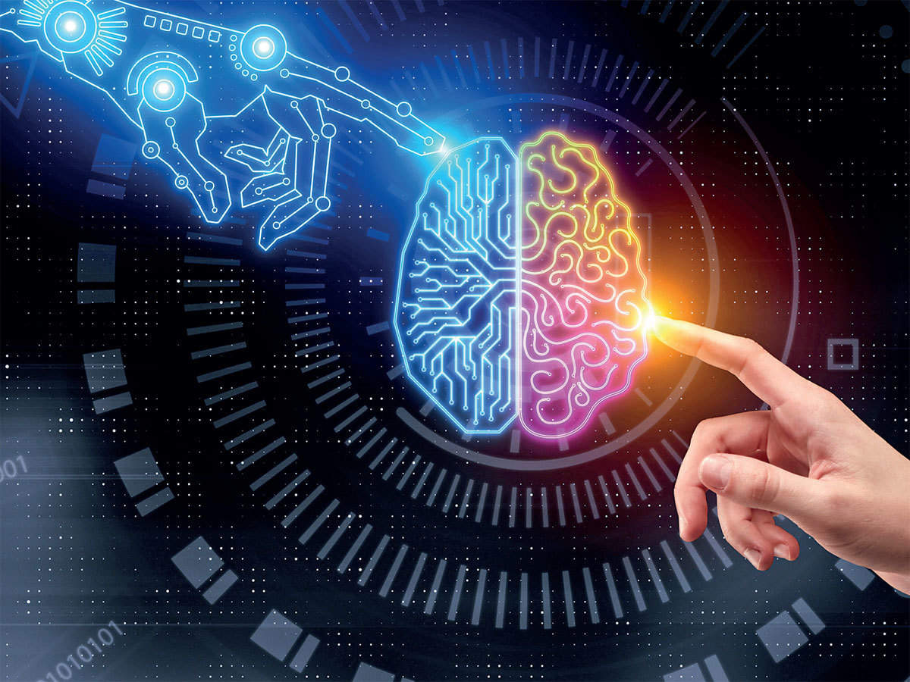

Artificial intelligence can be divided into two different categories: weak and strong. Weak artificial intelligence embodies a system designed to carry out one particular job. Weak AI systems include video games such as the chess example from above and personal assistants such as Amazon's Alexa and Apple's Siri. You ask the assistant a question, it answers it for you.
Strong artificial intelligence systems are systems that carry on the tasks considered to be human-like. These tend to be more complex and complicated systems. They are programmed to handle situations in which they may be required to problem solve without having a person intervene. These kinds of systems can be found in applications like self-driving cars or in hospital operating rooms.